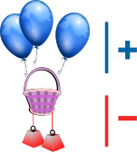
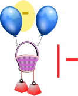
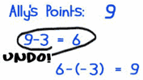
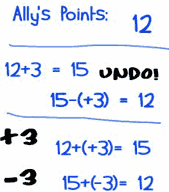

How to Add and Subtract
Positive and Negative Numbers
Numbers Can be Positive or Negative
This is the Number Line:
| Negative Numbers (−) | Positive Numbers (+) |
| "−" is the negative sign. | "+" is the positive sign |
No Sign Means Positive
If a number has no sign it usually means that it is a positive number.
Example: 5 is really +5
Play with it!
On the Number Line positive goes to the right and negative to the left.
Try the sliders below and see what happens:
Balloons and Weights
Let us think about numbers as balloons (positive) and weights (negative):

This basket has balloons and weights tied to it:
- The balloons pull up (positive)
- And the weights drag down (negative)
Adding a Positive Number
Adding positive numbers is just simple addition.
We can add balloons (we are adding positive value)
the basket gets pulled upwards (positive)
Example: 2 + 3 = 5
is really saying
"Positive 2 plus Positive 3 equals Positive 5"
We could write it as (+2) + (+3) = (+5)
Subtracting A Positive Number
Subtracting positive numbers is just simple subtraction.

We can take away balloons (we are subtracting positive value)
the basket gets pulled downwards (negative)
Example: 6 − 3 = 3
is really saying
"Positive 6 minus Positive 3 equals Positive 3"
We could write it as (+6) − (+3) = (+3)
Adding A Negative Number
Now let's see what adding and subtracting negative numbers looks like:
We can add weights (we are adding negative values)
the basket gets pulled downwards (negative)
Example: 6 + (−3) = 3
is really saying
"Positive 6 plus Negative 3 equals Positive 3"
We could write it as (+6) + (−3) = (+3)
The last two examples showed us that taking away balloons (subtracting a positive) or adding weights (adding a negative) both make the basket go down.
So these have the same result:
- (+6) − (+3) = (+3)
- (+6) + (−3) = (+3)
In other words subtracting a positive is the same as adding a negative.
Subtracting A Negative Number
Lastly, we can take away weights (we are subtracting negative values)
the basket gets pulled upwards (positive)
Example: What is 6 − (−3) ?
6−(−3) = 6 + 3 = 9
Yes indeed! Subtracting a Negative is the same as adding!
Two Negatives make a Positive
What Did We Find?
Adding a positive number is simple addition ...
Positive and Negative Together ...
or
Adding a Negative
is
Subtraction
Example: What is 6 − (+3) ?
6−(+3) = 6 − 3 = 3
Example: What is 5 + (−7) ?
5+(−7) = 5 − 7 = −2
Subtracting a negative ...
Example: What is 14 − (−4) ?
14−(−4) = 14 + 4 = 18
The Rules:
It can all be put into two rules:
| Rule | Example | ||||
|---|---|---|---|---|---|
| +(+) | Two like signs become a positive sign | 3+(+2) = 3 + 2 = 5 | |||
| −(−) | 6−(−3) = 6 + 3 = 9 | ||||
| +(−) | Two unlike signs become a negative sign | 7+(−2) = 7 − 2 = 5 | |||
| −(+) | 8−(+2) = 8 − 2 = 6 | ||||
They are "like signs" when they are like each other (in other words: the same).
So, all you have to remember is:
Two like signs become a positive sign
Two unlike signs become a negative sign
Example: What is 5+(−2) ?
+(−) are unlike signs (they are not the same), so they become a negative sign.
5+(−2) = 5 − 2 = 3
Example: What is 25−(−4) ?
−(−) are like signs, so they become a positive sign.
25−(−4) = 25+4 = 29
Starting Negative
What if we start with a negative number?
Using The Number Line can help:
Example: What is −3+(+2) ?
+(+) are like signs, so they become a positive sign.
−3+(+2) = −3 + 2

Start at −3 on the number line,
move forward 2 and you end up at −1
−3+(+2) = −3 + 2 = −1
Example: What is −3+(−2) ?
+(−) are unlike signs, so they become a negative sign.
−3+(−2) = −3 − 2

Start at −3 on the number line,
move back 2 and you end up at −5
−3+(−2) = −3 − 2 = −5
Now Play With It!
 |
Try playing Casey Runner, you need to know the rules of positive and negative to succeed! |
A Common Sense Explanation
And there is a "common sense" explanation:

If I say "Eat!" I am encouraging you to eat (positive)
If I say "Do not eat!" I am saying the opposite (negative).
Now if I say "Do NOT not eat!", I am saying I don't want you to starve, so I am back to saying "Eat!" (positive).
So, two negatives make a positive, and if that satisfies you, then you are done!
Another Common Sense Explanation
A friend is +, an enemy is −
| + + ⇒ + | a friend of a friend is my friend | |
| + − ⇒ − | a friend of an enemy is my enemy | |
| − + ⇒ − | an enemy of a friend is my enemy | |
| − − ⇒ + | an enemy of an enemy is my friend |
A Bank Example
Example: Last year the bank subtracted $10 from your account by mistake, and they want to fix it.
So the bank must take away a negative $10.
Let's say your current balance is $80, so you will then have:
$80−(−$10) = $80 + $10 = $90
So you get $10 more in your account.
A Long Example You Might Like
Ally's Points

Ally can be naughty or nice. So Ally's parents have said
"If you are nice we will add 3 points (+3).
If you are naughty, we take away 3 points (−3).
When you reach 30 Points you get a toy."
| Ally starts the day with 9 Points: | 9 | |
| Ally's Mom discovers spilt milk: | 9 − 3 = 6 | |
|
Then Dad confesses he spilt the milk and writes "undo". How do we "undo" a minus 3? |
||
| So Mom calculates: | 6 − (−3) = 6 + 3 = 9 |

So when we subtract a negative, we gain points
(i.e. the same as adding points).
| A few days later. Ally has 12 points. | ||
| Mom adds 3 points because Ally's room is clean. | 12 + 3 = 15 | |
| Dad says "I cleaned that room" and writes "undo" on the chart. Mom calculates: | 15 − (+3) = 12 | |
| Dad sees Ally brushing the dog. Writes "+3" on the chart. Mom calculates: | 12 + (+3) = 15 | |
| Ally throws a stone against the window. Dad writes "−3" on the chart. Mom calculates: | 15 + (−3) = 12 |

See: both "15 − (+3)" and "15 + (−3)" result in 12.
So:
It doesn't matter if you subtract positive points
or add negative points,
you still end up losing points.
or
Adding a Negative
is
Subtraction
Try These Exercises ...
Now try This Worksheet, and see how you go.
And also try these questions: